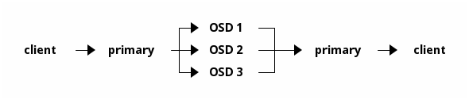
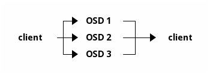

Notice
This document is for a development version of Ceph.
Erasure Coding Direct Reads
This document covers the design for EC Direct Reads, it also covers split reads for large replica IOs.
Basic design
Small reads
Currently, all reads in an erasure-coded pool are directed to the primary OSD of each PG. For a small (sub-chunk) read, this results in the following message flow:
The proposed direct read mechanism allows the client to bypass the primary and interact directly with the target OSD, streamlining the message flow:
In the event of OSD unavailability or a read error, the client will fall back to the legacy, primary-mediated read method to ensure data can be rebuilt from the coding shards.
Medium sized reads
Reads are classified as ‘medium’ when they span multiple data shards but are contained within a single stripe. The standard message flow for such a read is:

With the direct read mechanism, the message flow is optimized as follows:

Upon successful receipt of all data shards, the client is responsible for reconstructing the original data by concatenating the buffers in the correct sequence.
Large size reads
Large reads are those that exceed the size of a single data stripe. While each OSD can still perform a single read operation, the client cannot merely concatenate the data buffers. It must perform a de-striping operation to reconstruct the object’s data from the various stripe units.
Objecter
The client’s Objecter component is responsible for orchestrating direct reads through the following process:
Prior to initiating a direct read, the Objecter performs a preliminary, best-effort check based on its current OSD map to verify that all required OSDs are available. The possibility of race conditions arising from a stale OSD map is considered a rare event with minimal performance impact. If any required OSD is marked down, the read immediately falls back to the primary.
If all necessary OSDs are available, a new SplitRead object is instantiated
to manage the direct read operation.
The SplitRead object calculates the target OSDs and submits read requests to
each one in parallel.
Upon completion of all parallel reads, the SplitRead object inspects the
results for failures.
If all reads were successful, it de-stripes (for large reads) or concatenates (for medium reads) the data and completes the client’s original read request.
If any of the reads failed, it will discard any partial data and reissue the entire read operation to the primary OSD. While client-side recovery using parity shards is theoretically possible, it is avoided by design. Implementing the complex EC plugin architecture within every client is considered undesirable. Given that OSD failures are infrequent events to which the cluster adapts rapidly, the cost-benefit analysis strongly favors this simpler, more robust fallback mechanism.
EC Backend
The Erasure Coding backend will be enhanced to implement synchronous reads. This
functionality will be utilised exclusively by the direct-read mechanism and
will be identified by the BALANCED_READ flag on an EC read operation. There
will be a single attempt at the read; should this attempt fail, the I/O
operation will be failed back to the client without further retries at this
layer.
Missing objects
In scenarios where an object is temporarily unavailable due to recovery operations, the OSD will fail the direct read request. A new error code (name to be determined) will be introduced that instructs the client to not only retry the I/O but also to disable direct reads for the affected PG until the next epoch. This mechanism prevents the introduction of excessive latency during cluster recovery activities.
Torn Writes
A torn write is a potential consistency issue that arises from race conditions between read and write operations. This condition will be mitigated through a version-checking mechanism. For any multi-OSD read, the “OI” (Object Info) attribute on the primary is read in parallel with the data reads from the other shards. A version mismatch is considered an infrequent event. Executing this check concurrently with the data reads provides significant latency improvements, especially for workloads that are bandwidth-limited due to large chunk sizes. If a mismatch is detected between the version list from the primary and the versions read from the other shards, the operation will fall back to the legacy read mechanism.
Changes to default chunk sizes
To verify RADOS object versions, medium-sized reads frequently necessitate an additional I/O operation to the primary OSD. To reduce the frequency of these multi-shard reads, the default chunk size will be increased. While recent enhancements to erasure coding have removed many of the performance limitations of large chunks in Ceph, a key trade-off persists concerning storage efficiency for small objects.
The primary limitation of an increased chunk size manifests when the average object size is smaller than the chunk size. In this case, data chunks are left partially empty, and storage overhead increases. For small files, a K+M pool essentially degrades to a 1+M array, wasting space. Consequently, the default chunk size must be increased judiciously. Our data shows that we cannot practically increase chunk sizes beyond the current recommendation of 16k. However, future designs may allow for packing of multiple small objects into a single EC stripe. This will mitigate the effect of the small-object penalty, and we should then increase the chunk size. We believe that 256k is optimal for HDD and 32k for SSD, but careful performance testing will be required.
Read-write ordering
If the RWORDERING flag is not set on an I/O operation, a read may be
reordered with respect to any preceding, uncommitted write operations.
For example, consider the following sequence of operations on a single object:
Client submits
Write_1containing data ‘AAA’ to the object.Write_1completes. The object’s content is now ‘AAA’.Client submits
Write_2containing data ‘BBB’ to the same object.Before
Write_2completes, the client submits aReadoperation.
Under these conditions, the read operation is guaranteed to return the data from
either the completed Write_1 (‘AAA’) or the subsequent Write_2 (‘BBB’),
but never a torn result containing a mixture of both (e.g., ‘AAB’). This
provides a consistency guarantee analogous to that of balanced reads in
replicated pools.
If the RWORDERING flag is set, the operation must use the legacy,
primary-mediated read path to guarantee strict ordering. This ensures strict
ordering is maintained, particularly in failure scenarios. If a direct read were
attempted and then retried via the fallback path to the primary, the timing
change could violate the ordering guarantee. Forcing the use of the
primary-mediated path from the beginning prevents this ambiguity and is
consistent with the equivalent implementation for replicated pools.
Read Instability
Read instability is where read data changes after being first read, without a subsequent write.
Consider the following sequence:
Write A (completes)
Write B (does not complete yet)
Read, get data B.
Client performs some activity, which assumes B is committed to disk.
Write is rolled back (and failed, or never completed).
Even though the write B had not completed, it is often assumed by the client that B will never be rolled back.
Balanced replica reads deal with this scenario by rejecting a non-primary read if uncommitted writes exist in the log for this object. Such a mechanism is necessary for EC direct reads too if none of the reads apply to the primary.
Note
A similar mechanism for replica is implemented here: https://github.com/ceph/ceph/pull/49380
Kernel Client Modifications
Kernel-mode clients that use Ceph (such as the krbd driver for block
devices) will also require modification. The logic described in this document,
which is implemented in the user-space librados library, must be replicated
within the kernel drivers.
This involves implementing the SplitRead mechanism, including the
calculation of target OSDs, the parallel submission of I/O requests, and the
subsequent reassembly (concatenation or de-striping) of data. This is a
non-trivial task, as kernel development brings additional complexity regarding
memory management, asynchronous I/O handling, and ensuring system stability.
The design and implementation of these kernel-level changes are recognised as
a necessary work item, but the specific approach will require a separate,
detailed investigation. Additionally, the challenge of submitting code to the
kernel itself may prove an interesting challenge!
Performance, QoS and throttling
The direct read mechanism fundamentally alters the I/O pattern from the perspective of the OSDs. Where previously a client read resulted in a single I/O operation to the primary OSD, this design will now submit multiple, smaller I/O operations in parallel to different OSDs.
The balance of network operations will change and this will need to be carefully assesed in performance evaluation, so that we can provide sufficient data to the end user, to help make their decision about enabling this optional feature.
The splitting will significantly reduce the network traffic withing the cluster. The network load on the public, client network will see a more complex change:
Small IOs (sub-chunk) will see no increase in traffic at all.
Very large IOs will see an increase in the number of messages, but this is likely insignificant compared to the associated data transfers
For the intermediate IOs, the performance considerations are more nuanced, the splitting up of IOs will help to further distribute network traffic, but will lead to a larger overhead, as the IO count will increase.
CPU Load
As part of the implementation, the impact on CPU utilization on the client will be measured. The “destripe” mechanism is CPU intensive and results in non-contiguous buffers. This may be significant for some applications where the ceph client is completing for CPU resources with the client application.
It is important that the CPU “cost” of this feature is negligible when it is switched off: the bypass code must be trivially simple.
Throttling Considerations
This change presents a challenge for the existing throttling framework. It is critical that the throttling behavior for a single logical client read remains consistent, regardless of how many physical OSD operations it is split into. The precise method for ensuring that the throttling scheduler correctly accounts for these fragmented operations as a single logical unit is an open problem that requires further investigation. As such, the design for this component is not yet finalised and will be addressed during the implementation phase.
Replica Balanced Reads
For large, bandwidth constrained I/O patterns, direct EC reads are expected to
show significant improvements in latency compared to replica reads. Considering
this, the replica read mechanism will also be adapted to utilise the
SplitRead object for large, bandwidth constrained I/O. This will allow the
read workload to be split across multiple replica OSDs, preventing a single OSD
from becoming a bottleneck and improving overall performance for these
workloads. A separate PR will be used for replica reads, but for now we will
continue to use the same design document.
Splitting Reads
Early prototypes suggest that replica IOs should be split if:
SSD: If replica IO >= 2 x 128k, IO will be split into I/Os of at least 128k
HDD: If replica IO >= 2 x 256k, IO will be split into I/Os of at least 256k
Further performance measurements will be conducted to verify these changes and a user-parameter will be provided to adjust these thresholds if required.
Plugin Support
Potentially this could be made to work with all plugins. However, to reduce testing overhead, we will restrict to the following plugins:
Jerasure
ISA-L
We will set supporting LRC as a stretch goal, but this is dependent on the enhanced EC work supporting LRC, which is not currently required for Umbrella.
Supported Ops
Further investigation will be performed during implementation, so the following may change. The intent is to support ops such that the vast majority of IO in realistic work loads of RBD, CephFS and RGW perform EC direct reads. At the time of writing, the following seems like a reasonable limitation:
Objecter ops must contain a single op
Read
Sparse read
It is possible, but more complex to permit:
Multiple reads/sparse reads
Attribute reads (when performed with a read or sparse reads)
Sparse Reads
Sparse reads are currently treated as full reads by EC. Direct reads will support sparse reads. A new synchronous code path through the OSD EC Backend is required and implementing this such that it supports sparse reads is simple enough to be worth implementing
No attempt will be made to support sparse reads on any other EC reads. This means that in failure scenarios, the sparseness of the backend will disappear. This would likely be a significant issue for encryption, so will need to be addressed before encryption is supported. No client that supports EC can have a dependency on sparse reads being fully implemented, so this should not cause any regressions in the clients.
Object (user) Version
Clients can (and regularly do) request an “object version”. In the OSD this is known as the “user version” and is store in the OI along with the OSD’s interval version generated by primary log PG. They do this by passing a non-null pointer to objver in the read request. The objver is not always up-to-date on the non-primary OSDs. This means that any op requesting the objver must send a read to the primary, even if such a read is otherwise empty. This will have a significant impact on performance of small reads. Requesting objver was previously negligible form a performance point of view, as such a review of RBD, CephFS and RGW will be conducted to determine whether objver is sometimes requested without being necessary.
For replica split reads, the user version is up to date with the data on all shards, so the object version will be requested from a single arbitrary read.
Testing
ceph_test_rados_io_sequence
Small vs Medium vs Large Reads
Already covered by the IO exerciser through existing design of ceph_test_rados_io_sequence. Running through this should give us coverage of various reads.
Objecter
Already covered by IO exerciser, currently sends all IOs through librados which calls Objecter. Running through this should give us coverage of various reads.
Stale Maps/Fallback path
IO Exerciser has two injects for reads currently:
Type = 0 injects EIO when reading data, shard indicates which shard to fail. The inject is sent to the primary OSD
Type = 1 makes reads pretend a shard is missing which will immediately trigger extra reads for a decode, shard indicates which shard to fail. The inject is sent to the primary OSD
As it stands, these will not work with Direct Reads and we will need to make modifications to both the IO Exerciser so they send to the shard they want to inject, along with modifications to the injects so they can be called on the synchronous read path.
Missing Objects
We could add a Type = 2 inject similar to Type = 0 where instead of returning EIO it returns our new error code. We would need to either have a hook into objecter to tell it to start sending direct reads again in the same epoch, or force a new epoch following this. This would allow us to exercise the fallback path of the client.
Possibly we might want to enhance the —testrecovery flag to be something like —testrecovery=“read:2” or something to ensure we are able to use this new inject specifically.
Read/Write Ordering
A new ConcurrentWriteRead Op could be added which asserts the value that is read afterwards is either entirely the original data or entirely the new write and throw a miscompare either. It would be possible to keep stats and output which of the two hits we get to ensure we get coverage of both results occurring/assert if the ordering is wrong when we do not have the ordering flag set.
Along with this OP a new sequence to test this with various small/medium/large writes/reads would probably be needed to exercise this.
Kernel level testing
This area needs more consideration. Currently not covered by the ceph_test_rados_io_sequence. Need to investigate if there is an equivalent to librados for kernel space which the IO exerciser can use.
If not, then falling back to testing kRBD specifically may require a different script which can exercise different object sizes and stale map responses.
Miscellaneous
It is possible to set the balanced reads flag directly on the IO itself to have fine-grained control on a per-io basis of whether we are using balanced reads or not. The IO exerciser can at the point of doing a read decide if it wants to test doing a balanced read or not. The ReadOp can take an optional parameter to override this, if we want to have an op in a sequence which will always or never be balanced and an optional parameter can be added to the (Failed and non-failed) ReadOp(s) in interactive mode for if you wish to specify the value.
ceph_test_rados
ceph_test_rados is an existing tool that was very useful in the development of optimised ec when looking for issues. There are no enhancements planned in this area, but use of this tool will be heavily used during development to check for regressions.
Brought to you by the Ceph Foundation
The Ceph Documentation is a community resource funded and hosted by the non-profit Ceph Foundation. If you would like to support this and our other efforts, please consider joining now.